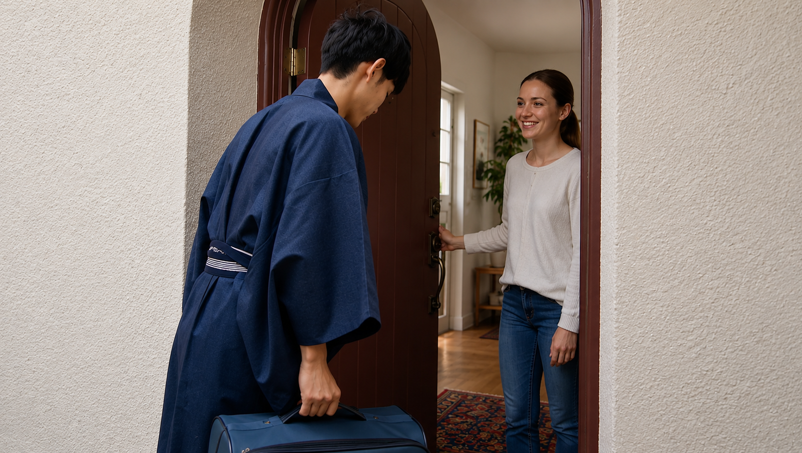
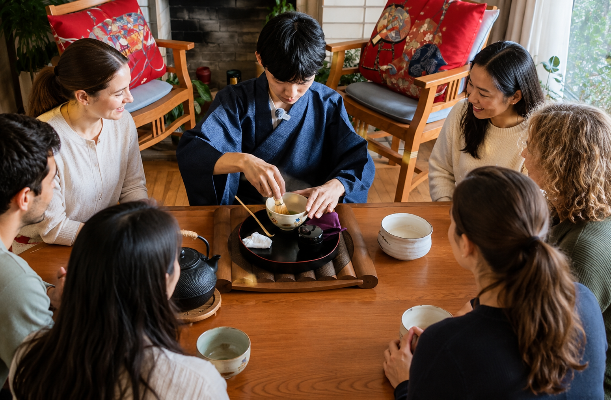

Step 1
Visit Our Website
Visit our website to learn about the experience, pricing, and available dates before making a reservation.
Private visiting-style matcha ceremony
A private Japanese tea ceremony brought directly to your home.
How it works
Booking your private tea ceremony is simple.
Visit our website to learn about the experience, pricing, and available dates before making a reservation.
Click "Book Here" and choose a date that is at least 3 days from today. You can reserve for up to 6 participants.
After booking, please tell us your address in San Francisco and any special requests for your group.

On the day of your reservation, I will arrive at your home with authentic Japanese tea utensils and matcha.

Relax and experience a private 60-minute Japanese tea ceremony together with your family or friends.
What this experience is
This visiting-style tea ceremony experience brings the spirit of Japanese hospitality into your San Francisco home. Your host introduces matcha, tea ceremony manners, and the quiet beauty of preparing and receiving tea with care.
It is designed for beginners, small private groups, and anyone curious about Japanese culture who wants a warm and personal experience without needing a formal tea room.
Prepare a small table space, and the ceremony comes to you.
Experience flow
Begin with a welcoming introduction to the meaning and mood of Japanese tea ceremony.
Watch how matcha is prepared with attention to movement, utensils, and hospitality.
Practice whisking matcha yourself in a relaxed, beginner-friendly setting.
Discover basic etiquette for receiving, appreciating, and drinking matcha.
Share tea together and experience a quiet pause inspired by Japanese tradition.
Why choose us
Learn through matcha, movement, manners, and the heart of hospitality.
No prior tea ceremony knowledge is needed. Every step is clearly introduced.
An intimate format for homes, gatherings, cultural learning, and special occasions.
The host visits your San Francisco location, making the experience simple to arrange.
The experience centers on care, presence, and the welcoming spirit behind tea.
Details
About the host
Secretary-General of the Japan Cultural Transmission Association
Kazuki Nakajima creates opportunities for people to engage with Japanese culture internationally. Through this tea ceremony experience, guests in San Francisco can encounter matcha, manners, and Japanese hospitality in a personal and approachable way.
Cultural credibility / association background
This experience is led by Kazuki Nakajima, Secretary-General of the Japan Cultural Transmission Association, an organization dedicated to creating opportunities for people to encounter Japanese culture. The founding representative is a former Commissioner for Cultural Affairs. With guidance from leaders in Japanese culture, diplomacy, business, law, arts, and public service, the association works to share the spirit of Japanese tradition internationally.
Learn More About the AssociationFAQ
No. A formal tea room is not required. A clean table space of at least 1m² is enough.
Yes. The experience is beginner-friendly and explains each step in clear English.
Yes. This is a private visiting-style experience for customers in San Francisco.
Please prepare table space, access to hot water, and a kitchen sink if utensils need washing.
Yes. The Japanese tea ceremony experience is free of charge.
Use any Book Here button on this page to open the reservation page and choose your preferred time.
Media
Explore press coverage and stories about the San Francisco In-Home Tea Ceremony Project.
Operator information
This Japanese tea ceremony experience is operated by Philia Inc., a Japan-based company led by Kazuki Nakajima. Through cultural experiences and international initiatives, we aim to create meaningful opportunities for people to encounter Japanese culture.
Kazuki Nakajima also serves as Secretary-General of the Japan Cultural Transmission Association.
Contact
Have a question about the private tea ceremony experience? Send a message and I’ll get back to you as soon as possible.
Private matcha experience in San Francisco